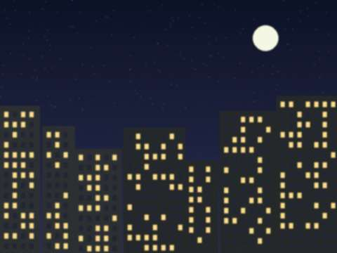

Сен242023
24 сентября 2023 в 19:30, Андрей Вальтер
В субботу был концерт нашего хора «Земляков» в церковном доме. Мы пели старые песни: «Катюшу», «Тёмную ночь», «Ой, цветёт калина», «Подмосковные вечера» и, к удивлению публики, одну ирадскую народную, которую выучили за месяц. Лена не пела, она готовила чай, но на последней песне всё же вышла и подпевала со всеми.
Пришло 61 человек, из них двенадцать молодых. Один юноша лет двадцати сказал: «Мой дед рассказывал про Кобозев, но я не верил, что он существовал». Я показал ему блог на телефоне. Он листал и повторял: «Ого, ого». Поздно вечером прислал письмо, что его дед из Дастгоха, с Заводской, и знал мою бабушку.
Бывают дни, когда понимаешь, зачем всё это писал. Сегодня один из них.
Рубрика: Германия | 1 комментарий »
Апр52020
5 апреля 2020 в 20:40, Андрей Вальтер
В Германии карантин с середины марта. Фирма закрылась, я дома, Лена работает в аптеке в маске, возвращается и сразу идёт в душ. Леон (ему 7) учится дома, по компьютеру, с планшета. Мы с ним решаем примеры, и я понимаю, что математика изменилась, но сложение осталось прежним.
Лена шьёт маски на старой «Подольске», которую привезла из Кобозева в 1993-м (да, привезла швейную машину!). Раздаёт соседям. Её маски пользуются спросом, особенно с цветочками.
Мы звоним по видео. Миша в Нуржане говорит, что у них хуже: город разделён блокпостами, в магазины по пропускам, транспорт для врачей. Не завидую. Здесь можно выйти в лес, и это спасает. Я каждый день хожу по тропинке за домом, а там - красота, подснежники. Прости, Кобозев, но в этот раз красота не твоя.
Рубрика: Германия | 1 комментарий »
Дек182016
18 декабря 2016 в 19:20, Андрей Вальтер
Сходили на рождественский рынок на площади. Глинтвейн, жареные каштаны, запах корицы и дыма. Леон (ему 4) ел «Lebkuchen» и измазался в сахаре до ушей. Он говорит: «Opa, es gibt Weihnachten und es gibt Новый год». Я сказал: «Правильно, их две штуки».

Рождественский рынок в Ларе, 17 декабря. Огоньки, пар от глинтвейна.У нас в Кобозеве рождественского рынка не было. Был Новый год, а Рождество немцы справляли дома, тихо, с закрытыми шторами: при Советах это не любили. У бабушки Марии была маленькая ёлочка 24 декабря, и мы с отцом ходили к ней «на ёлку» по вечерам. Она пекла «Stollen» из того, что было, и пела «Stille Nacht» вполголоса.
Теперь у нас в Ларе «Stille Nacht» поют по радио громко, на весь рынок. Я стоял, держал Леона на плечах и мысленно пел с бабушкой, шёпотом.
Рубрика: Германия | Комментариев нет »
Окт312010
31 октября 2010 в 18:50, Андрей Вальтер
В субботу был осенний сбор нашего общества «Земляки» в Ларе: 43 человека, из них 11 новых. Зал в церковном доме, длинные столы, пироги, чай из самовара (электрического, но самовар). Хор спел «Катюшу» и «Подмосковные вечера» и, по просьбе стариков, «Ой, цветёт калина». Мужчины, которые не поют, делали вид, что ищут носовые платки.
Говорили о Кобозеве. Каждый приходит со своим городом. У кого-то это школа и мороженое, у кого-то лагерь и «Артек», у кого-то - тот август, о котором не хочется. Старая Эмма Рейх (да, наша Эмма Андреевна с немецкого, ей 84!) рассказывала, как она вела уроки в 1960-е и как мы ей отвечали. Я выпил чаю и спрятался за колонной.
Рассказать о городе попросили меня. Я показал фотографии с проектора. После лекции ко мне подошёл мужчина лет шестидесяти и сказал: «Это моя улица». Улица была Заводская, а голубятню за котельной он помнил так же хорошо, как я. Мы выпили чаю за голубей.
Рубрика: Германия | 1 комментарий »
Ноя242007
24 ноября 2007 в 21:00, Андрей Вальтер
Просили рассказать, как мы живём в Германии. Лар - небольшой город на краю Шварцвальда, около 40 тысяч жителей. Горы начинаются сразу за городом, зимой их видно из окна, в ясные дни видны Вогезы. Есть Аистовая башня (Storchenturm), и осенью выставка хризантем «Хризантема», на которую приезжают со всей Германии. Мы ходим каждый год.
Живём в квартире в доме 1970-х, пять минут до работы пешком. Лена работает в аптеке, на кассе: её диплом в Германии не признали, первые годы она мыла полы в офисе, потом выучилась и получила место. Я наладчик станков на фирме, которая делает упаковочные машины, и руки у меня те же, что в цехе № 4.
Немецкий я выучил. Читаю газету, спорю с соседом, слово «Brötchen» произношу с акцентом, но уже без ужаса. Дети говорят лучше меня. Но когда они спорят друг с другом, переходят на русский.
Wir leben seit 1993 in Lahr. Die Stadt ist klein, die Berge sind nah, und die Nachbarn grüßen. Mehr braucht man nicht.
Рубрика: Германия | 2 комментария »